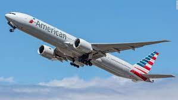

The Coronavirus is affecting many industries, and causing a lot of harm to businesses all over the United States. No better example is with the airline industry, since the demand for travel has decreased, it has caused companies like American Airlines to cut costs and cut, in this case, labor. American Airlines is not the only company doing this, Southwest and Delta Airlines are doing the same thing to preserve revenue.
In class today, we learned about supply and costs of production. In this case, we are seeing the affects of Coronavirus, a natural event, that has caused the supply curve to shift left and caused the demand curve to shift left.  The leftward shift in supply is what is causing the many workers to be laid off because the company cannot afford to keep them since the costs of production are to high especially if they are not making enough profit, due to the decrease in demand. This is why we are seeing examples like, “American Airlines said it would shed 19,000 workers by Oct. 1 as the carrier prepares to downsize to cope with the coronavirus blow to travel demand.” The airline companies, like American Airlines, are doing this to decrease variable costs, another term we learned today, in order to reduce total cots and to make as much profit as they can to survive this natural disaster. However, Airlines want to stop this mass amount of job loss in their industry, and they are asking for a factor that would keep supply from decreasing, and that is government subsidy, “Unions and airline officials have advocated for another round of funds to keep employees on the job through March 2021.” A government subsidy, like the one suggested in the quote, would allow airlines to keep their inputs and decrease costs of production and therefore, keep supply from decreasing until demand rises when Coronavirus disappears.